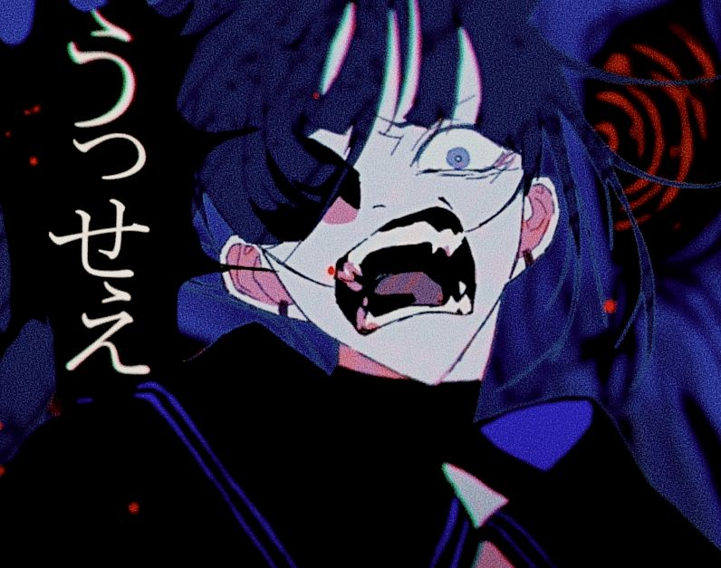
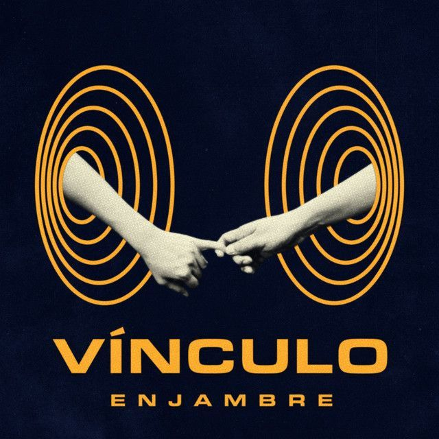
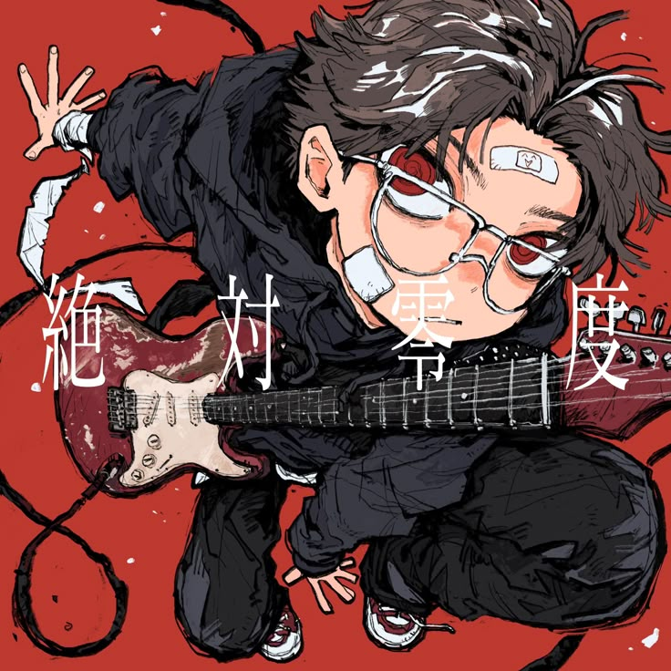
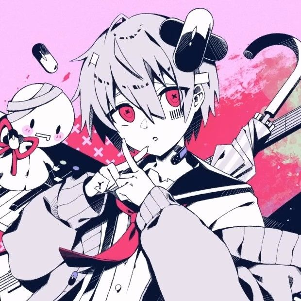
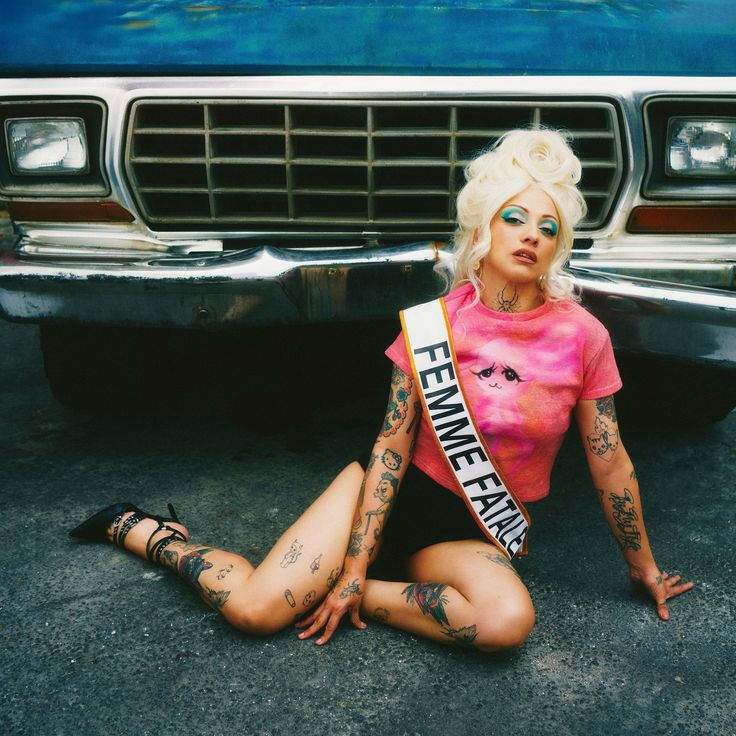
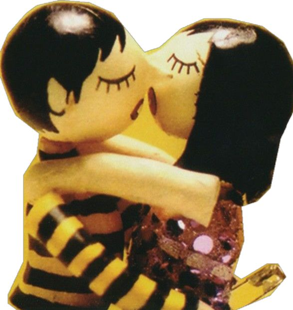
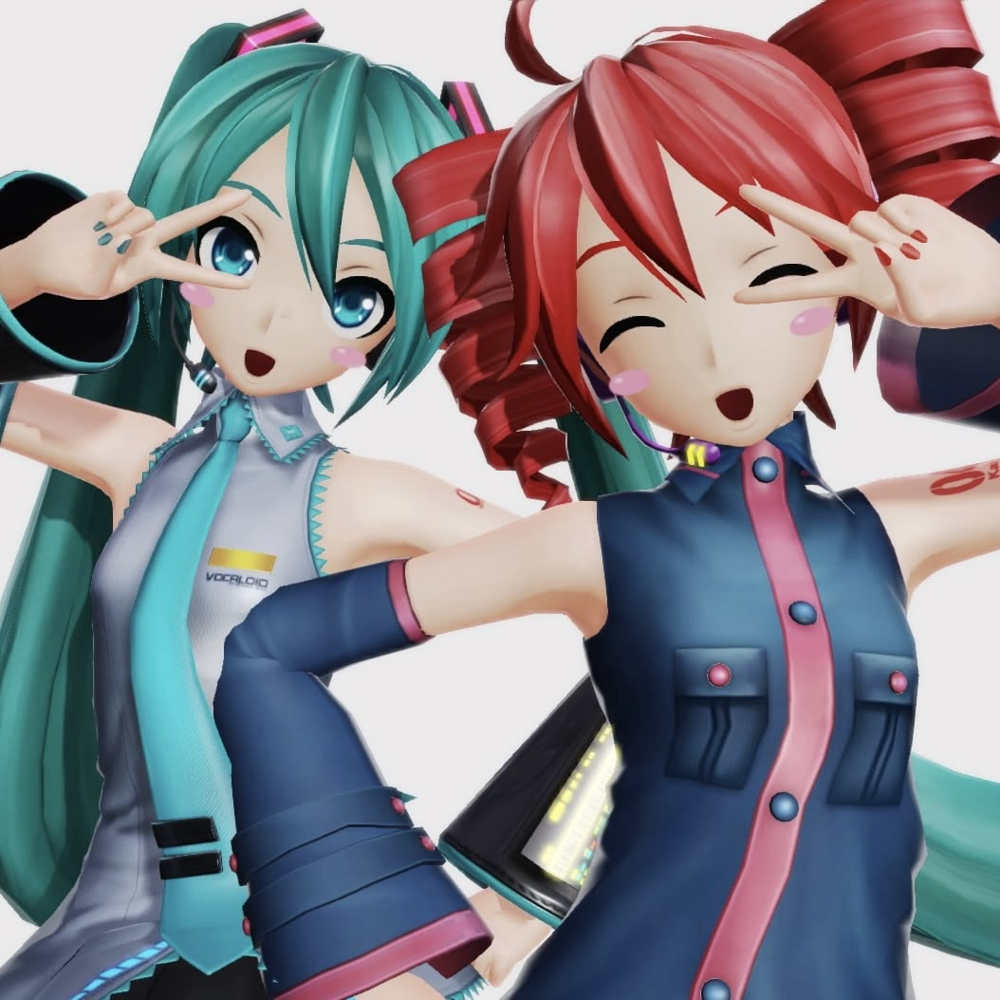

Algunas de ellas hablan de nosotros, otras simplemente me recuerdan a ti.

USSEWA
FAN NOMBER WAN DE ADO, para mi ese eres tú, no hubiera empezado a interesarme en ella si no fuera por ti, se que Ussewa es de lo más común para empezar, pero aún así, yo se que cada vez que escuche a ADO, solo podría pensar en ti ◝(ᵔᵕᵔ)◜

Vínculo
Okei...está me recuerda a nosotros ♡, solo puedo recordar cuanto te amo al escuchar esta bonita canción que pude conocer gracias a ti, y obvio, eres el fan de Enjambre más enjambroso que conozco, y el que yo adoro ^w^

Absolute Zero
Aunque solo conozco una canción de el gracias a Wind Breaker, se me quedó grabado en la cabecita cuando mencionaste que te gustaba mucho su música, que ahora lo veo, y me acuerdo de ti :D

...
Ahora si que estoy en terrenos desconocidos con el, pero una vez me contaste que te gustaba hace muchisimos meses, y nunca lo olvidé ✧｡٩(ˊᗜˋ )و✧*｡

My One And Only Love
No se realmente cuanto te guste Mon Laferte, pero de que te gusta, te gusta, y al escuchar My One And Only love, es inevitable no pensar en nosotros, nuevamente en cuanto adoro tenerte en mi vida, en como tú eres lo que siempre yo soñé 💞💞

El Beso Del Payaso
Tú y yio representamos esta canción yo lo sé, nuevamente Enjambre porque obvio eres el fan número 1, la verdad estoy eternamente agradecido de que me hayas mostrado y dedicado esta canción, es simplemente bellísima, igual que tú 💗

...
No escucho realmente a Vocaloid, quizá una que otra canción, peeero, si conozco a alguien que le gusta, y en quien pienso al ver algo relacionado, y ese eres tú <3